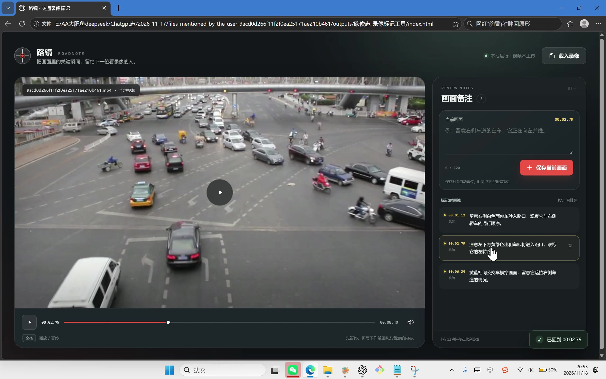

一、选择的问题
点击列表中的旧备注后，怎样让视频真正暂停并回到当时画面，而不是只改变当前时间的文字或列表高亮？
这个问题对应任务中的核心操作“点击备注回看”，也直接影响评委验收：如果只修改界面而不修改
<video>
的播放位置，列表看起来正常，但画面没有回来。
二、围绕该问题的完整对话
以下为从提出需求、讨论实现到用真实录像验收的完整对话记录。
function jumpToNote(note) {
video.pause();
video.currentTime = Math.min(note.time, video.duration || note.time);
state.activeNoteId = note.id;
updateTime();
renderNotes();
showToast(`已回到 ${formatTime(note.time)}`);
}
所有备注保存在
state.notes
数组中，保存新备注时使用
push
追加；renderNotes()
只重新绘制列表，不会清空原数组。因此连续添加时，旧备注会继续保留。
三、验证画面

点击旧备注后，视频时间回到 00:02.79，并显示回看提示。
一句话检查结果
我在提交的未剪辑录屏中看到添加了三条备注，并从
00:08.20
的画面点击
00:02.79
的旧备注后，播放器暂停并回到
00:02.79
的黄绿色出租车画面，同时显示“已回到 00:02.79”的提示。